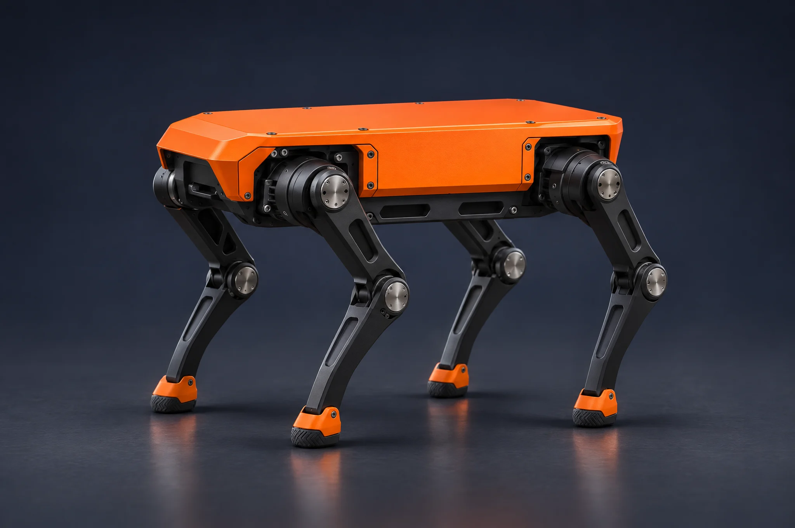

RoboDog
We tested PID control and PPO reinforcement learning for quadruped locomotion, training the PPO policy in MuJoCo.

A quadruped in simulation
RoboDog uses a four-legged robot model with twelve joints. A ROS 2 workspace brings together the model, control interfaces and simulation tools to explore how joint commands produce coordinated leg motion.
Testing PID control
We tested PID control for the quadruped and used inverse kinematics to translate body and foot targets into joint angles, exploring posture, foot placement and gait timing in simulation.
Training PPO in MuJoCo
We also tested PPO (Proximal Policy Optimization), a reinforcement learning approach. We trained the PPO policy in MuJoCo to generate joint-position targets from sensor observations and velocity commands.
Top 2 selection
Our team’s RoboDog project was selected among the top two projects. The linked repository documents the simulation work and both control approaches.